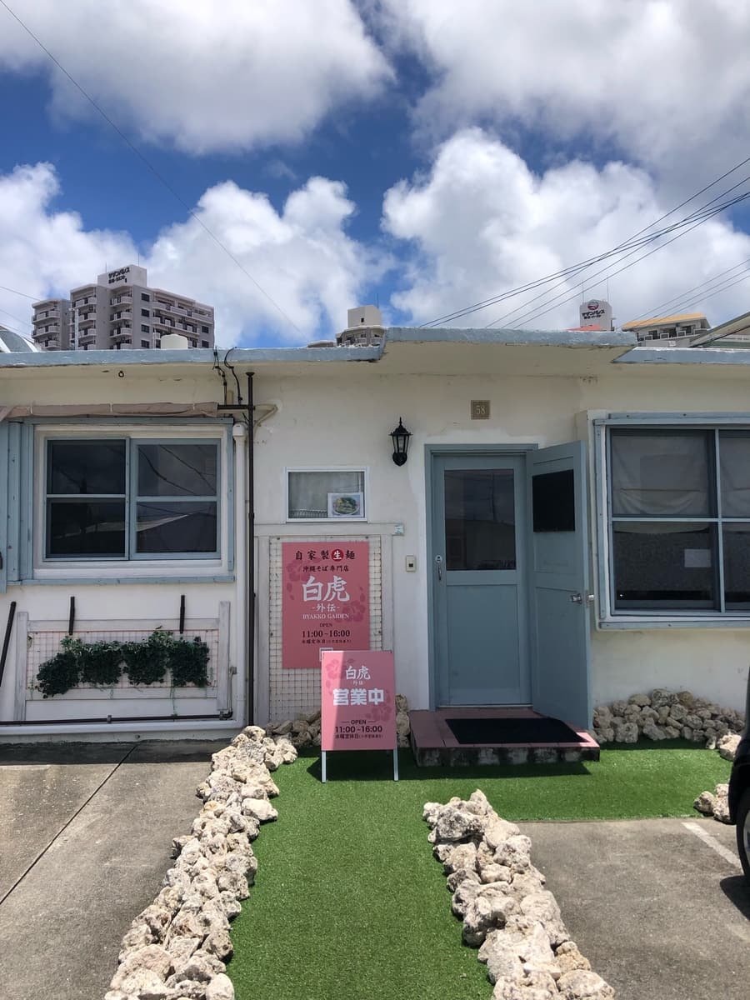
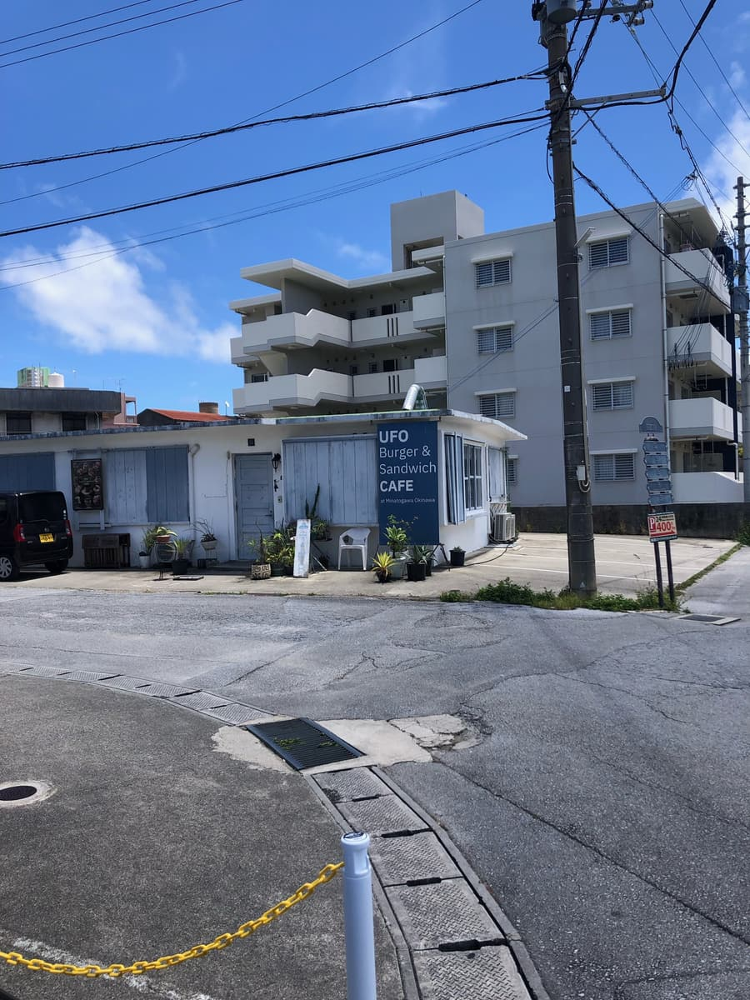
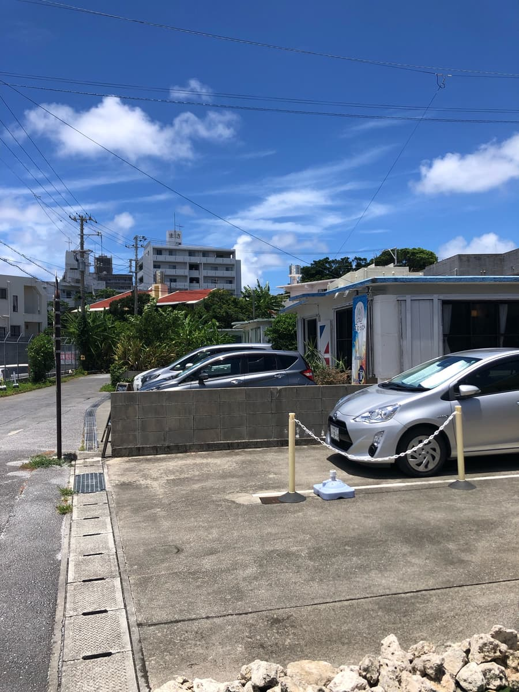
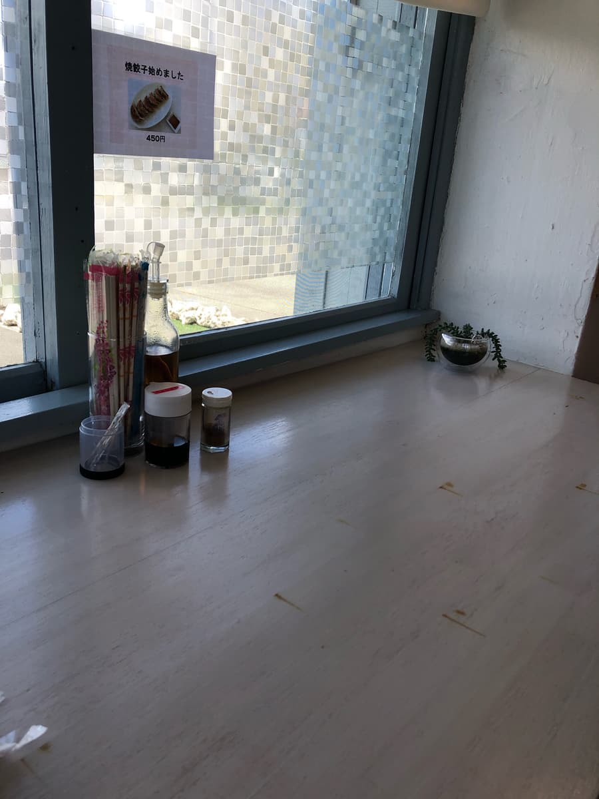
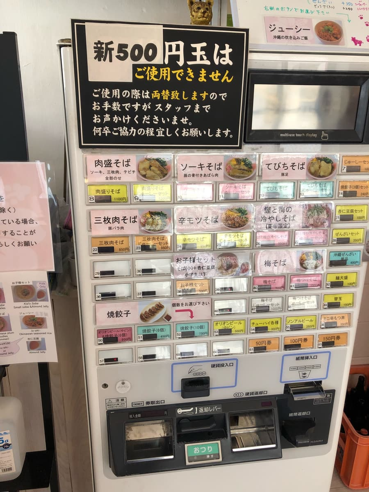
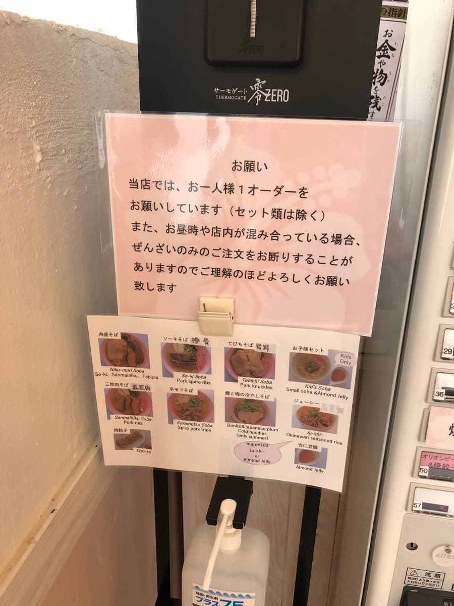
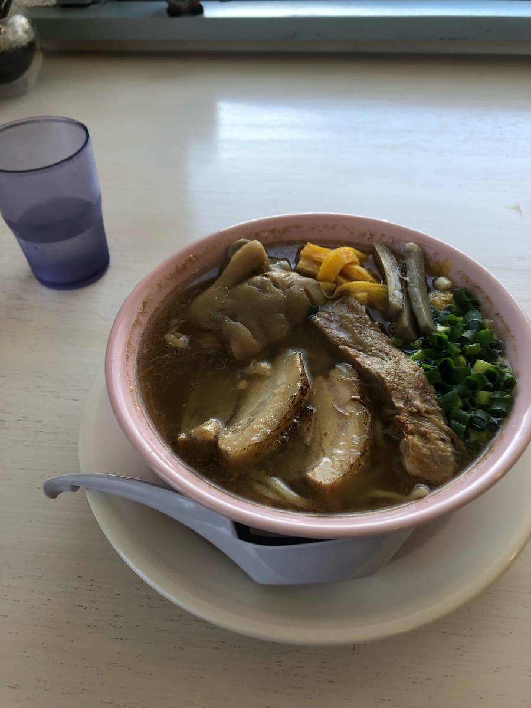
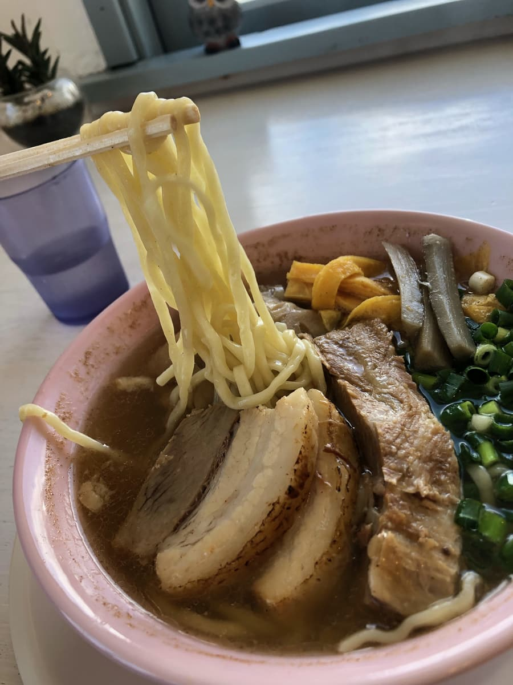
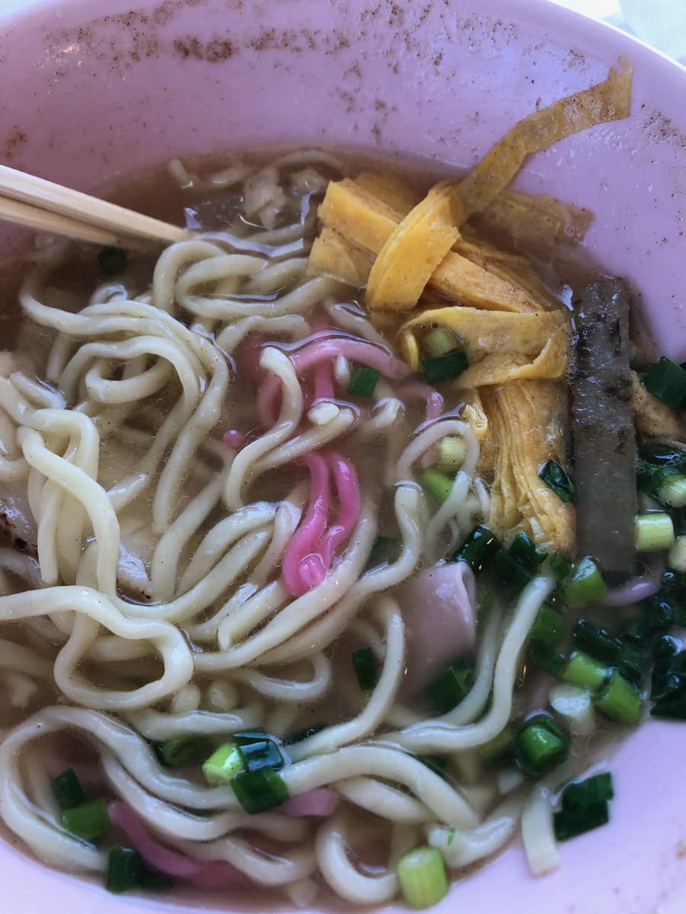

※這篇文章是用Claude 3.5 Sonnet的AI撰寫，並由我部分補寫。
這次要介紹的是我從地方報紙得知、位於浦添市港川的「白虎 外伝」。2024年7月吃的。由拉麵店轉型的店主所經營的沖繩麵專賣店，是不是讓人很好奇呢？😉

位於港川美式住宅區（Stateside Town）內的「白虎 外伝」，改裝自外人住宅的時尚外觀十分吸睛。白牆搭配水藍色窗框作點綴，滿滿的沖繩氛圍！🏠✨周圍的外人住宅也是林立著時尚餐飲店的區域呢😄



一走進店內，迎接我們的是以粉紅與白色為基調的內裝。與沖繩藍天的對比很美，讓人忍不住想拍照📸


那麼，這次點的是報紙上也有介紹的「肉盛麵」。如售票機的說明所示，似乎是放上了排骨、豬腳、三層肉的全配料麵。

一碗放了豪華配料的麵端上桌了。
湯頭是鰹魚和青花魚的海鮮高湯與豬骨高湯調和而成，味道很均衡。能感受到和其他沖繩麵店不一樣的個性。海鮮和豬骨的風味都不會過分強勢，溫和地融合在一起，很順口😌

接著吃麵😄 其實這個麵條非常獨特。是使用4種小麥的自家製麵，而且還有少量混入揉進了朱槿的粉紅色麵條作為點綴。滿滿的沖繩風情對吧🌺 很有嚼勁，口感也很有趣。

配料是豬腳、三層肉、排骨，沖繩麵的經典三人組。調味清爽，不會搶過湯頭和麵條的味道。不過我覺得存在感再強一點會更好。
「白虎 外伝」的特色，無論如何就是它的獨創性。既運用了在拉麵店累積的技術，也能感受到珍惜沖繩麵傳統的態度。我覺得這是充滿店主熱情與巧思的一碗💪
評分（9.5分/15分）：整體來看，麵條的獨特風味與美感令人印象深刻。湯頭也與其他店截然不同，讓人感受到沖繩麵的新可能性。配料或許還有改進的空間，不過整體來說是均衡的一碗。
「白虎 外伝」是一家在珍惜沖繩麵傳統的同時，也想注入新風氣的店。不只推薦給喜歡沖繩麵的人，對沖繩料理有興趣的人也很適合喔😊
想享受時尚的外觀與內裝，以及獨創沖繩麵的人，請務必來「白虎 外伝」走一趟。一定能遇見沖繩麵的新魅力！
麵：★★★✬☆（3.5）
湯頭：★★★☆☆（3）
配料：★★★☆☆（3）